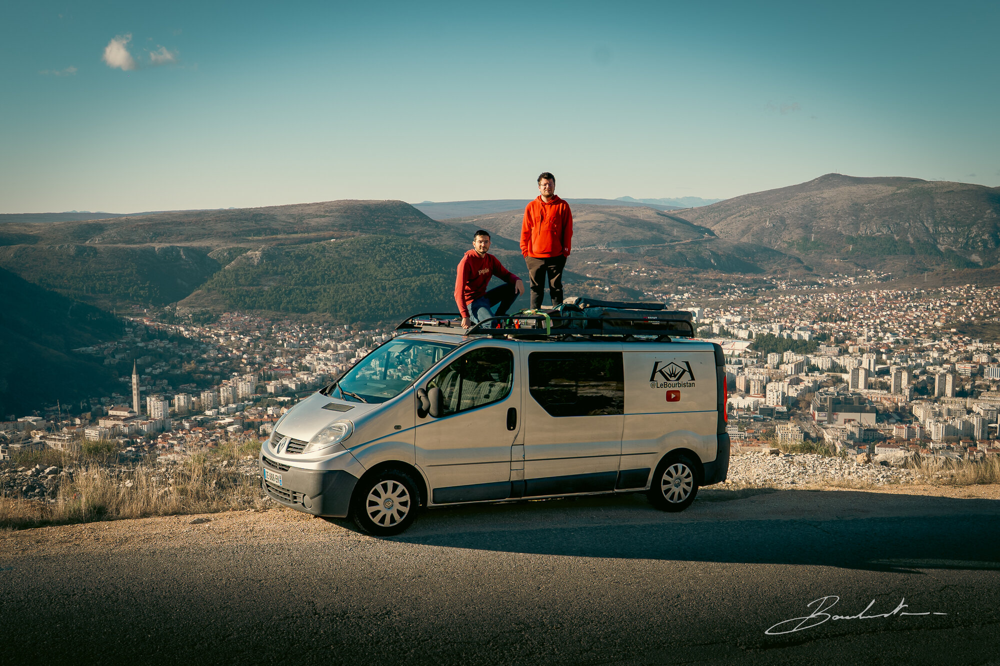
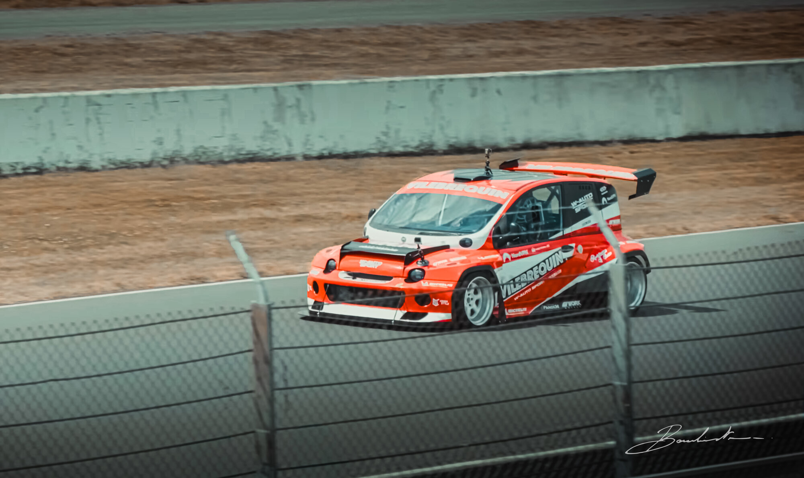
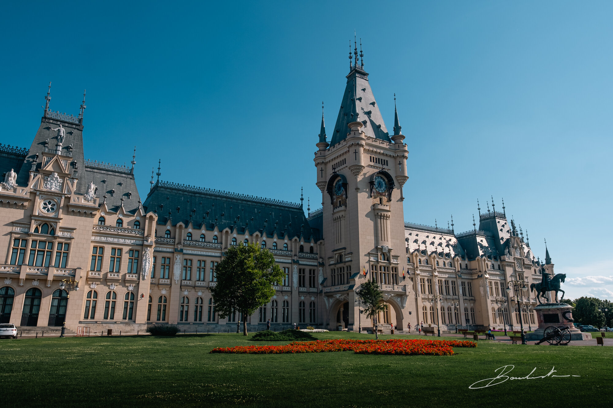
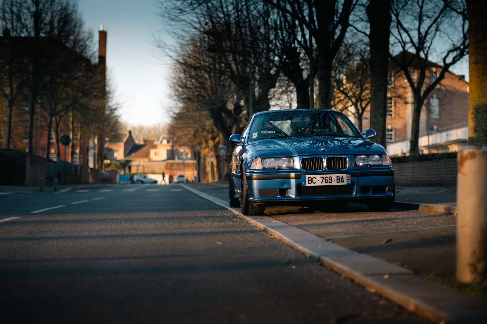
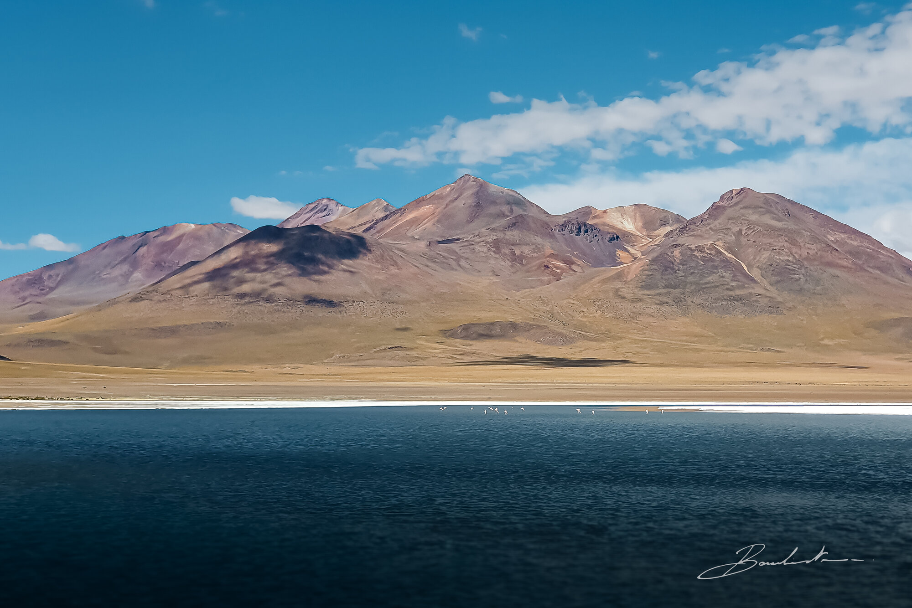
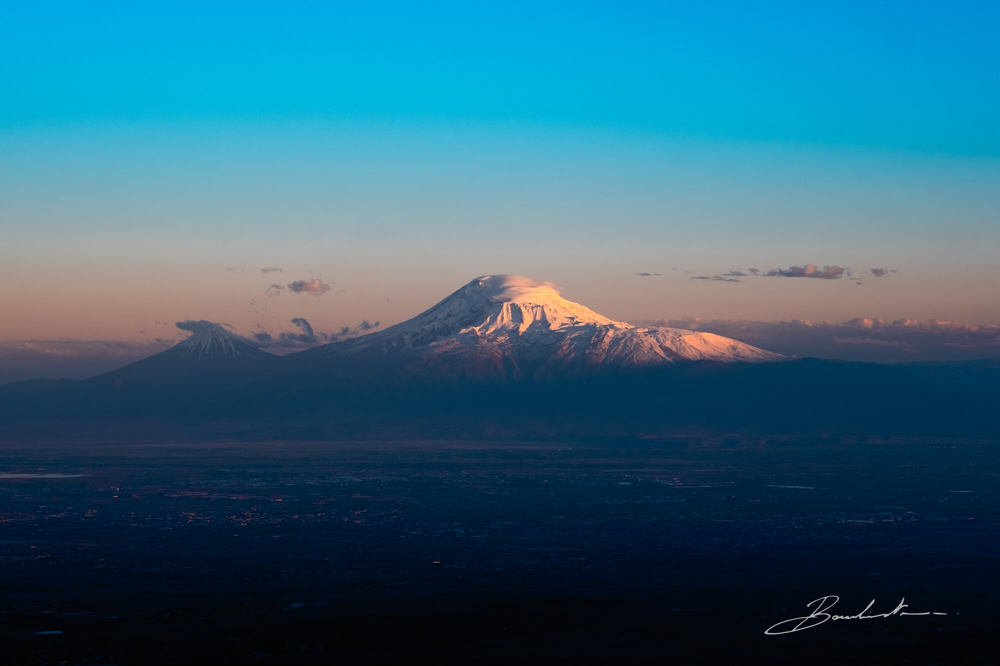
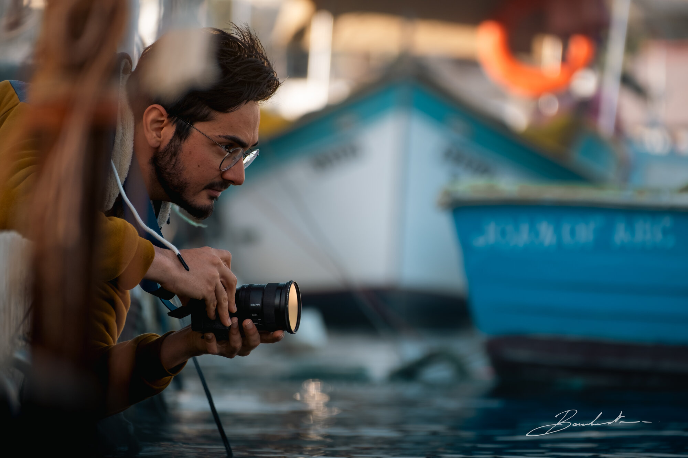

Vidéos
Films documentaires et reportages de voyage.

Balthazar
10 mois de voyage en van et sac à dos, entre l'Europe et l'Asie.

MTS
Une après-midi à Nevers Magny-Cours à la découverte du 1000 Tipla.

Roumanie
15 jours au cœur de la Roumanie entre la ruralité, la montagne et la ville.

L'Enfer Vert
3 jours sur le Nürburgring en BMW M3, la Mecque de l'automobile sportive.

Bolivie
Grand amoureux de l'Europe de l'est et de l'Asie, l'Amérique du Sud a fini par me surprendre.

Arménie
L'Arménie, j'ai toujours voulu y aller. Est-ce qu'elle a été à la hauteur de mes attentes ?

Malte
Une île méditerranéenne entre histoire millénaire et modernité.

Plan C
Quand le plan A et le plan B tombent à l'eau, le plan C prend le relais.